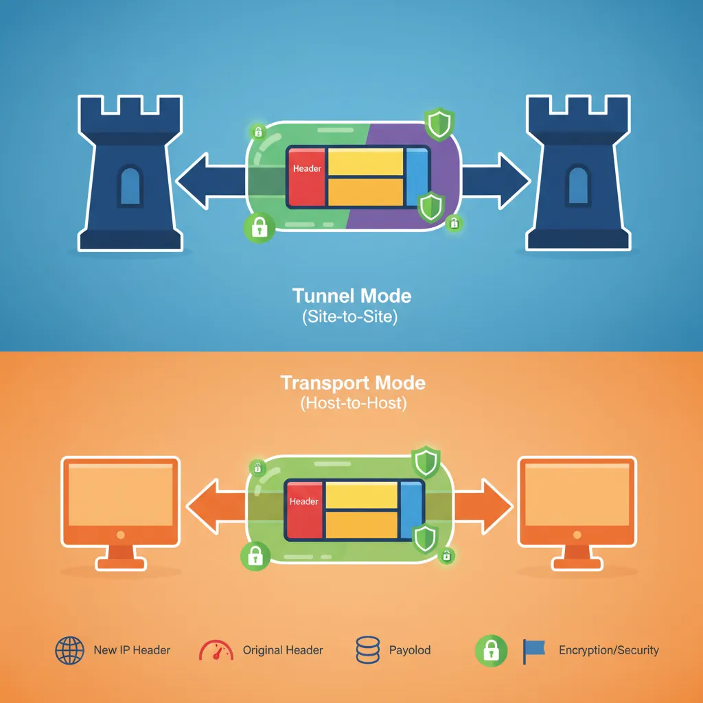
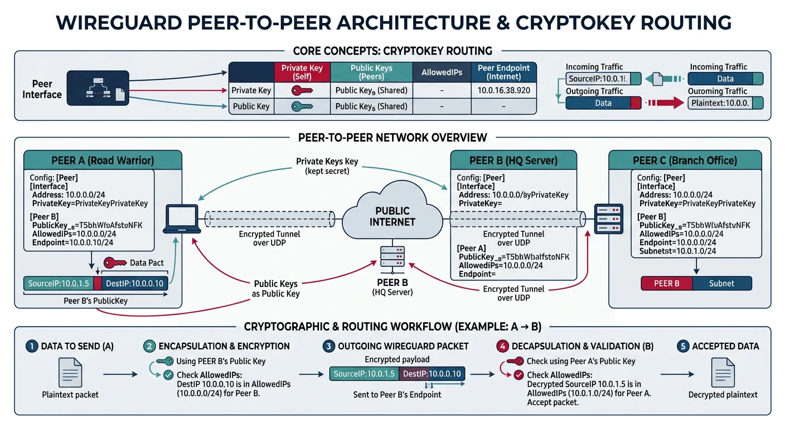
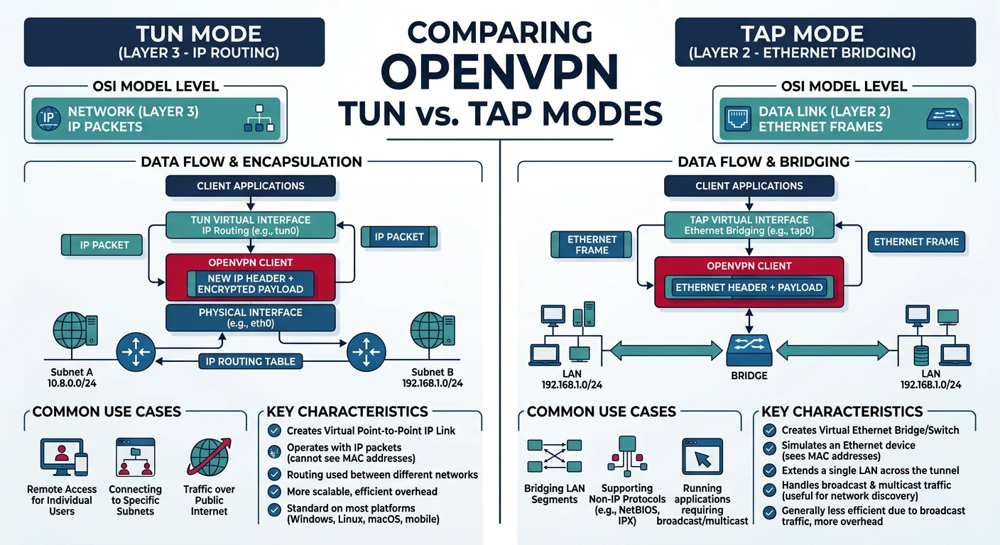
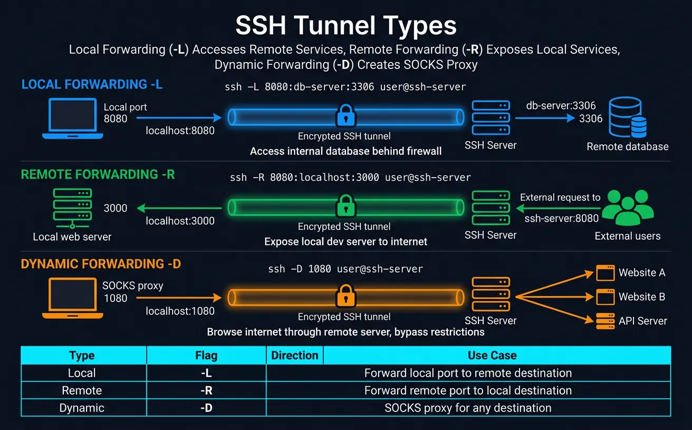
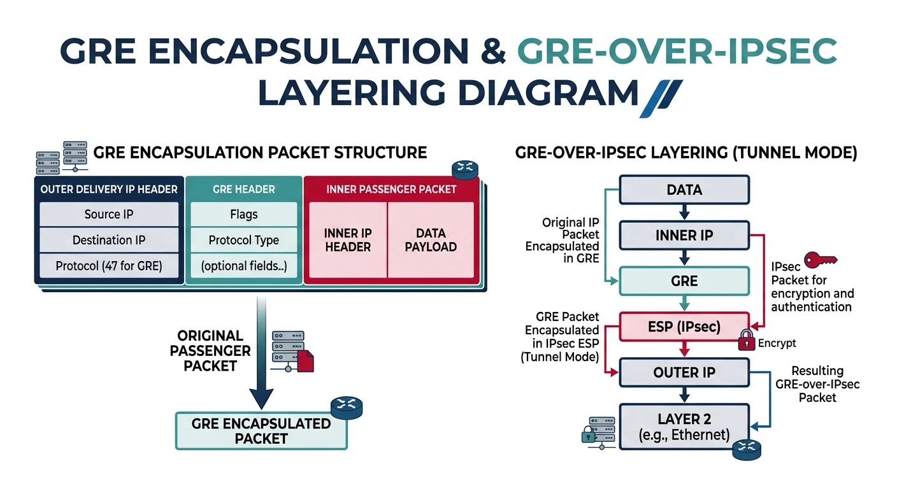

VPNs create encrypted "tunnels" through untrusted networks. Whether connecting offices, enabling remote work, or bypassing censorship—the goal is secure, private communication over public infrastructure.
Series Context: This is Part 14 of 20 in the Complete Protocols Master series. VPN protocols operate across multiple OSI layers—IPsec at Layer 3, SSL VPNs at Layer 4/7.
VPN Core Concepts:
1. TUNNEL
Original packet encapsulated inside another
Encrypted and authenticated
Appears as single connection to outsiders
2. ENCRYPTION
Prevents eavesdropping
Common: AES-256-GCM, ChaCha20-Poly1305
3. AUTHENTICATION
Proves identity of both ends
Pre-shared keys, certificates, or passwords
4. INTEGRITY
Detects tampering
HMAC, Poly1305
VPN Types:
• Site-to-Site: Connect entire networks
• Remote Access: Individual users to network
• Point-to-Point: Direct server connection
Without VPN:
[You] → [ISP] → [Internet] → [Server]
↑ Can see everything
With VPN:
[You] → [Encrypted Tunnel] → [VPN Server] → [Server]
↑ ISP sees encrypted blob
Comparison
VPN Protocol Overview
Protocol
Complexity
Speed
Best For
IPsec
High
Fast
Site-to-site, enterprise
WireGuard
Low
Fastest
Modern choice, mobile
OpenVPN
Medium
Good
Flexible, firewalls
SSH Tunnel
Low
Good
Quick port forwarding
PPTP
Low
Fast
❌ Broken, don't use
L2TP/IPsec
Medium
Good
Legacy compatibility
IPsec: Internet Protocol Security
IPsec is the standard for site-to-site VPNs between offices. It operates at Layer 3, securing all IP traffic transparently. Complex but battle-tested.

IPsec tunnel mode vs transport mode — tunnel mode wraps and encrypts the entire original packet (site-to-site), while transport mode encrypts only the payload (host-to-host)
Components
IPsec Architecture
IPsec Components:
1. IKE (Internet Key Exchange)
• Phase 1: Establish secure channel for negotiation
• Phase 2: Negotiate actual VPN parameters
• Handles key exchange, authentication
2. ESP (Encapsulating Security Payload)
• Encrypts packet payload
• Provides authentication
• Most common IPsec mode
3. AH (Authentication Header)
• Authentication only, no encryption
• Rarely used alone
• Doesn't work with NAT
Modes:
• Tunnel Mode: Entire packet encrypted (site-to-site)
• Transport Mode: Only payload encrypted (host-to-host)
IKE Phases:
Phase 1 (IKE SA):
• Authenticate peers
• Establish secure channel
• Negotiate algorithms
Phase 2 (IPsec SA):
• Negotiate IPsec parameters
• Create encryption keys
• One per traffic pair
# IPsec packet structure (Tunnel Mode)
Original Packet:
+--------+--------+---------+
| IP Hdr | TCP/UDP | Payload |
+--------+--------+---------+
After ESP Encryption (Tunnel Mode):
+----------+----------+------------+----------+---------+-----------+
| New IP | ESP | Orig IP | TCP/UDP | Payload | ESP Auth |
| Header | Header | Header | | | Trailer |
+----------+----------+------------+----------+---------+-----------+
|←────────── ENCRYPTED ────────────→|
ESP Header:
• SPI (Security Parameter Index): Identifies the SA
• Sequence Number: Anti-replay protection
ESP Trailer:
• Padding
• Authentication Tag (ICV)
IKEv2
IKEv2 Advantages
IKEv2 vs IKEv1:
IKEv2 Improvements:
• Fewer messages (4 vs 6-9)
• Built-in NAT traversal
• MOBIKE: Seamless IP changes (mobile)
• Stronger crypto requirements
• Better DoS resistance
IKEv2 Exchange:
Initiator Responder
| |
|--- IKE_SA_INIT -------->|
|<-- IKE_SA_INIT ---------|
| |
|--- IKE_AUTH ----------->|
|<-- IKE_AUTH ------------|
| |
[IPsec tunnel established]
Just 4 messages to establish VPN!
WireGuard is the modern choice—simpler, faster, and more secure by design. Only ~4,000 lines of code vs OpenVPN's 100,000+. Now included in the Linux kernel.

WireGuard's peer-to-peer cryptokey routing — each peer has a key pair, and AllowedIPs maps which traffic goes through which encrypted tunnel
Why WireGuard? Opinionated cryptography (no algorithm negotiation), minimal attack surface, excellent performance. The future of VPN.
Design
WireGuard Principles
WireGuard Design Philosophy:
1. SIMPLICITY
• ~4,000 lines of code (auditable)
• Fixed cryptography (no negotiation)
• Minimal configuration
2. CRYPTOGRAPHY (non-negotiable)
• Key exchange: Curve25519
• Encryption: ChaCha20-Poly1305
• Hashing: BLAKE2s
• KDF: HKDF
3. STEALTHY
• UDP only
• Silent to unauthenticated packets
• No handshake response until valid
4. ROAMING
• Client IP can change
• Seamless reconnection
• Perfect for mobile
Peer Model:
• No client/server distinction
• Each peer has public/private key pair
• AllowedIPs defines routing
# WireGuard setup
# 1. Generate keys (on each peer)
wg genkey | tee privatekey | wg pubkey > publickey
# 2. Server configuration (/etc/wireguard/wg0.conf)
[Interface]
PrivateKey = SERVER_PRIVATE_KEY
Address = 10.0.0.1/24
ListenPort = 51820
PostUp = iptables -A FORWARD -i wg0 -j ACCEPT; iptables -t nat -A POSTROUTING -o eth0 -j MASQUERADE
PostDown = iptables -D FORWARD -i wg0 -j ACCEPT; iptables -t nat -D POSTROUTING -o eth0 -j MASQUERADE
[Peer]
# Client 1
PublicKey = CLIENT1_PUBLIC_KEY
AllowedIPs = 10.0.0.2/32
[Peer]
# Client 2
PublicKey = CLIENT2_PUBLIC_KEY
AllowedIPs = 10.0.0.3/32
# 3. Client configuration
[Interface]
PrivateKey = CLIENT_PRIVATE_KEY
Address = 10.0.0.2/24
DNS = 1.1.1.1
[Peer]
PublicKey = SERVER_PUBLIC_KEY
Endpoint = vpn.example.com:51820
AllowedIPs = 0.0.0.0/0 # Route all traffic through VPN
PersistentKeepalive = 25
# 4. Start WireGuard
wg-quick up wg0
wg-quick down wg0
# 5. Check status
wg show
# WireGuard config generator
def generate_wireguard_config():
"""Generate WireGuard configurations"""
print("WireGuard Configuration Generator")
print("=" * 50)
# In real use, generate with: wg genkey | wg pubkey
print("""
# Generate keys (run on each machine):
wg genkey > privatekey
cat privatekey | wg pubkey > publickey
# Server config (wg0.conf):
[Interface]
PrivateKey =
Address = 10.0.0.1/24
ListenPort = 51820
[Peer]
PublicKey =
AllowedIPs = 10.0.0.2/32
# Client config:
[Interface]
PrivateKey =
Address = 10.0.0.2/24
[Peer]
PublicKey =
Endpoint = server-ip:51820
AllowedIPs = 0.0.0.0/0
PersistentKeepalive = 25
""")
print("\nAllowedIPs meanings:")
print("• 0.0.0.0/0: Route ALL traffic (full tunnel)")
print("• 10.0.0.0/24: Only VPN subnet (split tunnel)")
print("• 10.0.0.2/32: Only this specific peer")
generate_wireguard_config()
OpenVPN: Flexible SSL VPN
OpenVPN is the most flexible VPN solution. Uses SSL/TLS, works over TCP or UDP, and can traverse firewalls that block other VPNs.

OpenVPN TUN vs TAP modes — TUN operates at Layer 3 for IP routing (most common), while TAP operates at Layer 2 for full Ethernet bridging
Features
OpenVPN Capabilities
OpenVPN Features:
1. TRANSPORT OPTIONS
• UDP (default, faster)
• TCP (firewall-friendly)
• TCP 443 (looks like HTTPS)
2. AUTHENTICATION
• Certificates (PKI)
• Username/password
• Two-factor (TOTP)
• LDAP/RADIUS integration
3. MODES
• TUN (Layer 3, routing)
• TAP (Layer 2, bridging)
4. FLEXIBILITY
• Push routes to clients
• Client-specific configs
• Split tunneling
• Custom scripts
When to choose OpenVPN:
• Need TCP (blocked UDP)
• Complex authentication requirements
• Legacy system compatibility
• Need TAP mode (Layer 2)
# OpenVPN server configuration
# Server: /etc/openvpn/server.conf
# Network
port 1194
proto udp
dev tun
# Certificates
ca ca.crt
cert server.crt
key server.key
dh dh2048.pem
tls-auth ta.key 0
# Network settings
server 10.8.0.0 255.255.255.0
push "redirect-gateway def1 bypass-dhcp"
push "dhcp-option DNS 8.8.8.8"
# Security
cipher AES-256-GCM
auth SHA256
# Performance
keepalive 10 120
comp-lzo
# Privileges
user nobody
group nogroup
persist-key
persist-tun
# Logging
status /var/log/openvpn-status.log
verb 3
# OpenVPN client configuration
# Client: client.ovpn
client
dev tun
proto udp
remote vpn.example.com 1194
resolv-retry infinite
nobind
persist-key
persist-tun
# Certificates (inline or file reference)
ca ca.crt
cert client.crt
key client.key
tls-auth ta.key 1
cipher AES-256-GCM
auth SHA256
verb 3
# Connect
# openvpn --config client.ovpn
SSH Tunnels
SSH tunnels aren't full VPNs, but they're incredibly useful for quick secure access. Forward specific ports or create a SOCKS proxy—all through SSH.

SSH tunnel types — local forwarding (-L) accesses remote services, remote forwarding (-R) exposes local services, and dynamic forwarding (-D) creates a SOCKS proxy
Tunnel Types
SSH Tunnel Options
SSH Tunnel Types:
1. LOCAL PORT FORWARDING (-L)
Forward local port to remote service
ssh -L 8080:internal-server:80 user@jump-host
You → localhost:8080 → [SSH] → jump-host → internal-server:80
Use: Access internal web server through jump host
2. REMOTE PORT FORWARDING (-R)
Expose local service on remote server
ssh -R 8080:localhost:3000 user@server
server:8080 → [SSH] → You → localhost:3000
Use: Expose local dev server publicly
3. DYNAMIC PORT FORWARDING (-D)
Create SOCKS proxy
ssh -D 1080 user@server
Configure browser to use SOCKS5 localhost:1080
All traffic goes through SSH tunnel
Use: Browse as if from server's location
# SSH tunnel examples
# Local port forwarding
# Access remote database through jump host
ssh -L 5432:database.internal:5432 user@jump-host
# Now: psql -h localhost -p 5432
# Access internal web app
ssh -L 8080:intranet.company.local:80 user@vpn-server
# Now: http://localhost:8080
# Remote port forwarding
# Expose local dev server
ssh -R 80:localhost:3000 user@public-server
# Now: http://public-server/ shows your local app
# SOCKS proxy (browse through remote)
ssh -D 1080 user@server
# Configure browser: SOCKS5, localhost:1080
# Keep tunnel alive in background
ssh -f -N -L 8080:target:80 user@jump
# -f: Background
# -N: No command (tunnel only)
# Multiple tunnels
ssh -L 8080:web:80 -L 3306:db:3306 -L 6379:redis:6379 user@jump
# SSH tunnel with Python (sshtunnel library)
def ssh_tunnel_example():
"""Demonstrate SSH tunnel usage"""
print("SSH Tunnel with Python")
print("=" * 50)
print("""
from sshtunnel import SSHTunnelForwarder
import pymysql
# Create tunnel to access MySQL through SSH
with SSHTunnelForwarder(
('jump-host.example.com', 22),
ssh_username='user',
ssh_pkey='/path/to/key',
remote_bind_address=('database.internal', 3306),
local_bind_address=('127.0.0.1', 3306)
) as tunnel:
# Connect to database through tunnel
conn = pymysql.connect(
host='127.0.0.1',
port=tunnel.local_bind_port,
user='dbuser',
password='dbpass',
database='mydb'
)
cursor = conn.cursor()
cursor.execute('SELECT * FROM users')
print(cursor.fetchall())
""")
print("\nInstall: pip install sshtunnel")
ssh_tunnel_example()
GRE Tunnels
GRE (Generic Routing Encapsulation) creates simple tunnels without encryption. Often combined with IPsec for secure site-to-site links.

GRE packet encapsulation — the original packet is wrapped in a GRE header and new IP header, and when combined with IPsec, the entire GRE packet is encrypted
GRE Basics
GRE Overview
GRE Characteristics:
WHAT IT DOES:
• Encapsulates any protocol in IP
• Creates virtual point-to-point link
• No encryption (add IPsec for security)
USE CASES:
• Carry non-IP protocols over IP network
• Connect routing domains
• Multicast over WAN
• Usually combined with IPsec
GRE Packet:
+----------+----------+----------+----------+
| Delivery | GRE | Passenger| Passenger|
| Header | Header | Header | Payload |
+----------+----------+----------+----------+
(Outer IP) (Inner packet)
GRE over IPsec:
+--------+---------+----------+----------+----------+
| IP Hdr | ESP Hdr | GRE Hdr | Inner IP | Payload |
+--------+---------+----------+----------+----------+
|←────── Encrypted ──────────→|
# GRE tunnel configuration (Linux)
# Site A (192.168.1.0/24, public IP: 203.0.113.1)
ip tunnel add gre1 mode gre remote 198.51.100.1 local 203.0.113.1 ttl 255
ip link set gre1 up
ip addr add 10.0.0.1/30 dev gre1
ip route add 192.168.2.0/24 via 10.0.0.2
# Site B (192.168.2.0/24, public IP: 198.51.100.1)
ip tunnel add gre1 mode gre remote 203.0.113.1 local 198.51.100.1 ttl 255
ip link set gre1 up
ip addr add 10.0.0.2/30 dev gre1
ip route add 192.168.1.0/24 via 10.0.0.1
# Verify
ip tunnel show
ping 10.0.0.2 # Ping across tunnel
# Note: GRE alone is NOT encrypted
# Combine with IPsec for security
Protocol Comparison
Decision Guide
Choosing the Right VPN
Scenario
Best Choice
Reason
New deployment
WireGuard
Simple, fast, modern
Enterprise site-to-site
IPsec IKEv2
Standard, hardware support
Strict firewall
OpenVPN (TCP 443)
Looks like HTTPS
Quick port forward
SSH tunnel
No setup, instant
Mobile users
WireGuard
Seamless roaming
Legacy integration
OpenVPN
Most flexible auth
# VPN selection helper
def vpn_recommendation():
"""Recommend VPN based on requirements"""
recommendations = {
"greenfield": {
"vpn": "WireGuard",
"why": "Modern, simple, fastest performance",
"config": "~15 lines of config"
},
"corporate_site_to_site": {
"vpn": "IPsec IKEv2",
"why": "Industry standard, hardware support",
"config": "Complex, but well-documented"
},
"restricted_network": {
"vpn": "OpenVPN over TCP 443",
"why": "Mimics HTTPS, hard to block",
"config": "Certificate management needed"
},
"quick_access": {
"vpn": "SSH tunnel",
"why": "No setup, use existing SSH",
"config": "One command"
},
"mobile_workers": {
"vpn": "WireGuard",
"why": "Seamless IP changes, low battery",
"config": "QR code import supported"
}
}
print("VPN Recommendation Guide")
print("=" * 50)
for scenario, rec in recommendations.items():
print(f"\n{scenario.replace('_', ' ').title()}:")
print(f" → {rec['vpn']}")
print(f" {rec['why']}")
print(f" Config: {rec['config']}")
vpn_recommendation()
Summary & Next Steps
Key Takeaways:
IPsec: Enterprise standard, site-to-site, complex
WireGuard: Modern, simple, fastest—the future
OpenVPN: Flexible, works through firewalls
SSH Tunnel: Quick port forwarding, no setup
GRE: Encapsulation without encryption (add IPsec)
Quiz
Test Your Knowledge
IPsec IKEv2 vs IKEv1? (Fewer messages, NAT traversal)
WireGuard advantage? (Simple, fast, minimal code)
When OpenVPN over WireGuard? (TCP needed, complex auth)